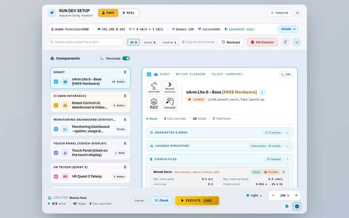

Interakt Control Robot Der Mensch führt. Die KI assistiert.
Assistive Robotik-Plattform für den xArm Lite 6 auf Basis von ROS 2 Humble, gebaut für Lehre und Forschung. Beispielszenarien wie die Logistik-Zelle mit Auto-Palettieren zeigen die Bandbreite.
- Digital Twin + echte Roboter-Hardwareerst virtuell, dann real
- Im Browserohne Installation
- Open SourceApache 2.0
Zeiger bewegen: der Arm folgt · ziehen zum DrehenZiehen zum Drehen
- ROS 2 Humble
- MoveIt 2
- rosbridge
- three.js
- Rapier
- WebXR
- YOLOv8
- OctoMap
- Whisper
- Ollama
- Flask
- SQLite
- xArm Lite 6
- Vakuumgreifer
- ZED Mini
- RTX A5000
- Xbox Elite 2
- Meta Quest 3
- Tobii Glasses 3
- Mikrofon
- Touch-Display
Unterlagen
Hier finden Sie alle Unterlagen nach Rolle: vorstellen, einrichten und bedienen, weiterentwickeln.
Vorstellen
Ein Roboter. Zehn Wege, ihn zu bedienen.
- Hier finden Sie
- Projektvorstellung, Steuerwege, Funktionsatlas und Poster A2
- Wir bieten
- Zielsetzung, Steuerwege und Sicherheitskette ohne technisches Vorwissen
- Wir bringen mit
- 3D-Digital-Twin zum Ausprobieren, alle 83 Funktionen auf einer Karte
 Projektvorstellung
ProjektvorstellungDas Projekt interaktiv: 3D-Digital-Twin mit Pick & Place, Greif-Ablauf in 7 Schritten, KI-Agent, Evaluierung
HTML Steuerwege & Sicherheitskette
Steuerwege & SicherheitsketteZehn Steuerwege, eine Sicherheitskette: Eingabegeräte, Kette zum Ausprobieren mit E-STOP, Fähigkeits-Matrix
HTML Funktionsatlas
FunktionsatlasAlle 83 Funktionen in 9 Bereichen, je mit Datenfluss und Topics; 10 Kreisläufe als Ring
HTML Poster A2
Poster A2Das Projekt auf einer Seite, für Poster-Session und Druck
HTMLPromo-Video folgt
folgtPoster als PDF: poster_a2.pdf
Einrichten & Bedienen
Erst virtuell, dann real.
- Hier finden Sie
- Setup-Guide, Schnellstart, Handbuch und Setup-Karte in Arbeitsreihenfolge
- Wir bieten
- Inbetriebnahme in 8 Phasen und 41 Schritten: vom Karton bis zur Abnahme
- Wir bringen mit
- Start als Roboter-Simulation oder auf echter Roboter-Hardware, im Labor oder remote
 Setup-Guide
Setup-GuideVom Karton zur Abnahme: 8 Phasen, 41 Schritte; PC vorinstalliert oder ab Ubuntu 22.04
HTML
SchnellstartSystem starten, Betriebsart wählen: Roboter-Simulation (Digital Twin) oder echte Roboter-Hardware
MD Handbuch xArm Lite 6
Handbuch xArm Lite 6Nachschlagen im Betrieb: System Map, Regelkreis, Sicherheit, Ports, Remote Guide, VLA-M, Logistik-Zelle
HTML Setup-Karte
Setup-KarteNetze, Adressen und Ports auf einen Blick; HTTPS/VR, Server/Client
NexusEntwickeln
Offen, nachbaubar, erweiterbar.
- Hier finden Sie
- 13 Dokumente in 4 Themen: Grundlagen, Steuern, KI, Überwachung
- Wir bieten
- Konzept, Pakete und Schnittstellen, jedes Modul einzeln austauschbar
- Wir bringen mit
- Eigene Pakete unter Apache 2.0 auf ROS 2 Humble und MoveIt 2
Öffnen statt installieren.
Bedienen, starten, überwachen und tippen: lokal, im Heimnetz oder auf der Quest 3.


Ein Roboter. Zehn Wege, ihn zu bedienen.
Sechs Prinzipien tragen die Plattform: vom Digital Twin bis zur gemessenen Evaluierung.
- Erst virtuell, dann real.
Jede Bewegung läuft zuerst im physikbasierten Digital Twin, danach derselbe Ablauf am xArm Lite 6.
Kernmerkmale - Eine Kette für jede Eingabe.
Zehn Steuerwege, von Gamepad und VR bis Blick, Sprache und KI-Chat.
Funktionsabläufe - Die KI plant. Der Mensch gibt frei.
Der Arm fährt erst nach Freigabe; Eingreifen geht jederzeit.
Das Prinzip - Öffnen statt installieren.
Bedienung komplett im Browser: lokal, im Heimnetz oder auf der Quest 3.
Vier Web-Apps - Gemessen statt geschätzt.
Monitoring Dashboard erfasst System und Nutzung; Usability-Tests mit SUS und NASA-TLX.
Evaluationslogik - Austauschbar statt festgelegt.
Eingabegerät, Kamera, KI-Modell und Software-Baustein einzeln ersetzbar; Roboterarm geplant.
System-Stack
Alle 83 Funktionen auf einer Karte.
Neun Bereiche, je Funktion der animierte Datenfluss mit belegten Topics; zehn Kreisläufe als Ring.
- Steuerwege14Gamepad, Joggen, TCP-Gizmo …
- Sicherheit16E-STOP, Control-Lock, Heartbeat …
- Digital Twin13URDF, Ghost-Plan, Kollisionsanzeige …
- Vision6ZED + YOLOv8, ArUco, Kollisionsobjekte
- KI / VLA-M7KI-Agent, Planprüfung, Skills …
- Monitoring Dashboard11Übersicht, System, Prozesse …
- Evaluierung8Tests, Latin Square, Teilnehmer-Login …
- Daten3Blackbox, Demo-Recorder, Klick-Statistik
- Infrastruktur5Nexus Webapp, Touch Panel, Setup-Karte …
Jede Funktion hat einen eigenen Link: present_function_atlas.html#<id>
Projekt verstehen
Das Projekt in vier Fragen: Warum, Was, Womit, Wie. Jede Kachel öffnet den Abschnitt in der Projektvorstellung.
Live erleben: im UX‑Labor oder im Browser.
Vorführung, Fragen oder Nachbau im eigenen Labor: alle Unterlagen sind hier verlinkt, der Code steht unter Apache 2.0.